A vertex may lie on multiple constraints, but the constraints should be non-degenerate, i.e. their gradients should be linearly independent. In particular, the number of constraints cannot exceed the number of dimensions of the ambient space.
For any vertex on level-set constraints, the vertex is projected to the constraint using a Newton-Raphson method any time the vertex is moved. Recall that Newton-Raphson moves along the gradient(s) using a linear approximation to where it estimates the level set to be. It may take multiple iterations of Newton-Raphson to get sufficiently close to the desired level set, and Evolver will complain if things are bad enough that 10 iterations are not enough. Also, in computing the gradient descent motion, the force on a vertex is projected tangent to the constraint before the vertex is moved, to minimize the amount of Newton-Raphson projection needed after motion.
The online documentation for level-set constraints is here.
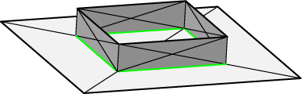
This example is a soap film between a fixed square wire frame and a free boundary on a horizontal plane at z = 0 (the green line in the image). The constraint is defined in the top part of the datafile, and then applied to the appropriate vertices and edges. Here are relevant lines from the datafile free_bdry.fe:constraint 1 // the plane formula: z = 0 vertices ... // the contact line on the plane 5 0 0 0 constraint 1 6 1 0 0 constraint 1 7 1 1 0 constraint 1 8 0 1 0 constraint 1 ... edges ... // the contact line 5 5 6 constraint 1 color green 6 6 7 constraint 1 color green 7 7 8 constraint 1 color green 8 8 5 constraint 1 color green ...Constraints can be numbered or named; naming is a recent feature, and I still instinctively use numbers. The formula for the level set can be given either as equality of two arbitrary formulas, left side = right side, or as one formula taken to be equal to 0.
Run free_bdry.fe in Evolver. Try this evolution:
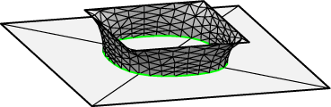
g 5 refine edge where on_constraint 1 g 5 r g 10 u V g 10 r g 10 u V u V g 100Note that the surface meets the plane at right angles. This is the consequence of minimizing area with a free boundary, and does not depend on the constraint being flat. However, a flat constraint can be viewed as a symmetry plane for a larger surface. Cutting down a symmetric surface to a smaller piece bounded by mirror planes is a good way to simplify surfaces and speed up evolution. In fact, this surface still has 8-fold symmetry left; can you see how additional symmetry planes could be used to cut the surface down to 1/8 of what is pictured?
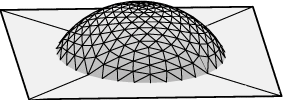
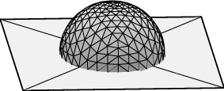
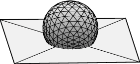
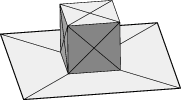
The simplest way to construct this system is to take the cube example put its bottom face on a z = 0 constraint, and vary the surface tension of the bottom face to control the contact angle. This is done in the datafile moundfull.fe; the bottom face, its four edges, and its four vertices are all placed on constraint 1. It is important to remember to place appropriate facets and edges on constraints, so when you refine them, the newly created vertices will inherit the appropriate constraints.You should now run moundfull.fe in Evolver.
Evolving with 90 degree contact angle: This corresponds to zero surface tension of the interface, so you want to set the tension attribute of the interface facets to 0. Give this command to do so:
set facet tension 0 where on_constraint 1Now evolve, say with
g 5 refine edge where on_constraint 1 g 5 r g 20 r g 100Evolving with 60 degree contact angle: Don't bother to restart, just change the tension of the interface to -cos(60) and evolve:
set facet tension -0.5 where on_constraint 1 g 100Evolving with 120 degree contact angle: Again, don't bother to restart, just change the tension of the interface to -cos(120) and evolve:
set facet tension 0.5 where on_constraint 1 g 100Now look carefully at the output in the terminal window. Notice the scale has taken a nosedive. This does indicates something is preventing evolution. If you look at the underside of your plane, you will see that the contact line has run into the vertices resulting from refining the bottom face. These vertices see no reason to move, and so the contact line stalls. It is possible to use vertex averaging (the V command) to move those vertices, but it is tedious and inelegant.
There are better ways to deal with contact surfaces, but to understand them, we must discuss some details about how Evolver calculates volumes.
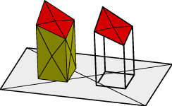
Evolver knows surfaces. Evolver only knows bodies by the surfaces enclosing them. So Evolver has to calculate the volume of a body from surface information only. The volume of a body is calculated by calculating for each facet the oriented volume of the vertical prism between the facet and the z = 0 plane, and adding the contributions of all the facets of the body. The orientation of the facet with respect to the body is taken into account (which is why facets are signed in the body defintion in the datafile), so facets on the top side of the body add volume and facets on the bottom subtract. One implication of this method is that certain types of facet contribute zero to the volume calculation: horizontal facets at z = 0 and vertical facets. So in the picture at right, the two bodies have exactly the same calculated volume, even though the right body is defined only with four facets (just the top red facets). This image is from the datafile volume.fe, if you want to run it and look at it from various angles.The message here is that bodies do not have to be completely enclosed by facets, and you are free to omit facets that do not contribute to the volume. In particular, you could omit the interface facets from the mound model and still get correct volume calculations. But how about the energy those facets represent?
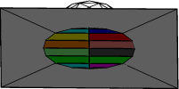
To compensate for the energy represented by missing facets, it is possible to add an energy defined as the line integral of a vectorfield around the contact line. Green's Theorem ensures that there is a vectorfield such that integrating around a boundary curve is equal to the area integral of the enclosed region. For example, in a horizontal plane, integrating x dy counterclockwise around the boundary of a region gives the area of the region. Instead of remembering the formula for Green's Theorem, you can think of this integral as dividing the area up into strips of width dy from the y-axis to the curve, so each edge corresponds to a strip of length x and width dy. The image at right illustrates how each edge corresponds to a strip.A constraint definition can have an "energy" integrand added to it, which means that this integrand will be integrated along every edge on the constraint and the result added to the total energy of the surface. The datafile mound.fe is suitably modified, with the constraint definition thus:
parameter angle = 90 // interior angle between plane and surface, degrees #define PLANET (-cos(angle*pi/180)) // virtual tension of facet on plane constraint 1 /* the table top */ formula: z = 0 energy: // for contact angle e1: 0 e2: PLANET*x e3: 0Try running mound.fe with the same evolution as above for moundful.fe, and you will see there is no problem with a shrinking contact line. NOTE: To change the contact angle now, you change the angle variable,
angle := 60and so forth. <.p> Further benefits of replacing facets with constraint integrals are less memory use and faster calculation. Also, integrand formulas can contain variables, so changing one variable such as "angle" automatically changes the energy.
NOTE: Be careful with the orientation of your edges. The integrand is evaluated along the orientation you give in the datafile. Remember that Evolver does NOT know the orientation of this edge relative to the area you are omitting!!
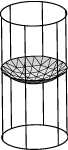
Constraint energy integrals are very useful with curved constraints, which are awkward to cover with flat triangles. At right is shown the top surface of liquid in a vertical tube, with the liquid making a 45 degree contact angle with the wall. This time, the constraint integrand gives the area of the tube below the contact line, with each edge of the contact line accounting for the tube wall directly below it:parameter radius = 1 // of tube parameter height = 4 // of tube parameter angle = 45 // interior contact angle, degrees #define WALLT (-cos(angle*pi/180)) constraint 1 // the tube wall, for contact line formula: x^2 + y^2 = radius^2 energy: e1: -WALLT*z*y/radius e2: WALLT*z*x/radius e3: 0The full datafile is capillary.fe. Run it in Evolver with this evolution:
r g 5 r g 10Looks pretty good. Now try a further g 50. You should see a problem with the edges along the contact line getting very uneven. This is a general problem with curved constraints, and is not caused by using constraint integrals. Even though the constraint the edges are on is curved, the edges themselves are still straight, and opening gaps between the edges and the constraint often turns out to save energy. The next section shows a way to prevent this.
parameter flute_count = 3 // start with 3 planes, enough for 6 vertices constraint 3 formula: sin(flute_count*atan2(y,x))The revised datafile is capillary2.fe. If you run this, you will find no problems with edges shortcutting the curved wall. NOTE: the flute_count variable has to be doubled each refinement to provide enough planes for the vertices. I have made that automatic in this datafile by re-defining the r command in the bottom section of the datafile:
r :::= { flute_count *= 2; 'r' }
The :::= is syntax just for re-defining single-letter commands,
and the single quotes around r on the right mean use the original meaning of r.
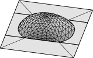
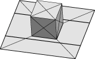
The example shown at right is a drop confined to lie on a wettable strip, where its contact angle is 60 degrees. Here are relevant parts of the datafile, moundpad.fe:parameter angle = 60 // interior angle between plane and surface, degrees parameter xleft = -.2 // left side of wettable strip parameter xright = 1.2 // right side of wettable strip #define LOWERT (-cos(angle*pi/180)) // virtual tension of facet on plane constraint 1 /* the table top */ formula: z = 0 energy: // for contact angle e1: -(LOWERT*y) e2: 0 e3: 0 constraint leftcon nonnegative formula: x - xleft constraint rightcon nonpositive formula: x - xright vertices 1 0.0 0.0 0.0 constraint 1,leftcon,rightcon /* 4 vertices on plane */ 2 1.0 0.0 0.0 constraint 1,leftcon,rightcon 3 1.0 1.0 0.0 constraint 1,leftcon,rightcon 4 0.0 1.0 0.0 constraint 1,leftcon,rightcon ... edges 1 1 2 constraint 1,leftcon,rightcon /* 4 edges on plane */ 2 2 3 constraint 1,leftcon,rightcon 3 3 4 constraint 1,leftcon,rightcon 4 4 1 constraint 1,leftcon,rightcon ...Notice I'm using constraint names here to show how it is done. Also notice that an element can be on multiple one-sided constraints; only the constraints that are actually hit count for the independence requirement.
Run moundpad.fe in Evolver, with the evolution
refine edge where on_constraint 1 g 5 r g 10 r g 100
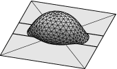
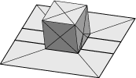
This is a more elaborate use of one-sided constraints. Here the droplet is large enough to slop over the wettable strip onto the relatively nonwettable outside (contact angle 120 degrees). The variable contact tension can be implemented by using a conditional expression in the constraint integrand?parameter wet_angle = 60 // interior angle between plane and surface, degree
parameter dry_angle = 120 // interior angle outside strip
parameter xleft = .2 // left side of wettable strip
parameter xright = .8 // right side of wettable strip
#define WETT (-cos(wet_angle*pi/180)) // virtual tension of facet on plane
#define DRYT (-cos(dry_angle*pi/180)) // virtual tension of facet on plane
constraint 1 /* the table top */
formula: z = 0
energy: // For contact angle. Note that conditional expression is just
// the two tensions because dx strips each have constant tension!!!!
e1: (x > xleft and x < xright) ? -(WETT*y) : -(DRYT*y)
e2: 0
e3: 0
However, note carefully that the integrand has been set up so the strips
it represents are each of constant tension! If one did dy strips, the
integrand would have to be more elaborate, and when x is outside the wettable
strip, still account exactly for the interface tension inside the strip.
A further feature of this example is the use of multiple one-sided constraints to keep different parts of the contact line in their own regions. There are vertices explicitly constrained to lie on the edges of the wettable strip. The full datafile is moundstrip.fe. An evolution:
g 5 r u V V g 10 g 20 r g 100
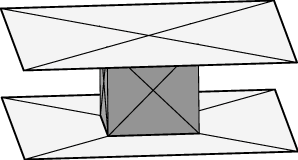
Since it is so useful to be able to replace facets with constraint integrals for energy, I realized it would be good to replace facets with constraint integrals for computing volumes also. So if one adds a "content" integrand to a constraint, then this integrand is integrated along each edge on the constraint, and the result added to the volume of adjacent bodies, according to the relative orientation of the edge and the body. Unfortunately (in the view of some people), this works out as if you were doing Green's Theorem with the boundary oriented clockwise around the missing region instead of counterclockwise. But that choice seemed natural when I first programmed it in, and once something like that gets in, it can't be changed without breaking a lot of datafiles for a lot of people. So check and double-check that you are getting the proper results.I use the word "content" instead of "volume" since this method also applies to area in the string model, with suitable modifications.
An example of a constraint content integral is the datafile plates_column.fe, which is a liquid column between two parallel plates, with the endcap facets omitted (the large squares are just for display, they are not part of the body definition). Relevant parts of the datafile:
parameter top_angle = 70 // interior angle between plane and surface, degrees parameter bottom_angle = 70 // interior angle between plane and surface, degrees parameter height = 1 // separation of plates // Contact surface tensions #define UPPERT (-cos(top_angle*pi/180)) // virtual tension of facet on plane #define LOWERT (-cos(bottom_angle*pi/180)) constraint 1 /* the lower plate */ formula: z = 0 energy: // for contact angle e1: -(LOWERT*y) e2: 0 e3: 0 constraint 2 /* the upper plate */ formula: z = height energy: // for contact angle and gravitational energy under missing facets e1: -(UPPERT*y) + G*z^2/2*y e2: 0 e3: 0 content: c1: z*y c2: 0 c3: 0
NOTE: When setting up a content integral, always carefully check when you load the file in Evolver that the volume is correct. It is very easy to get the sign wrong. On the plus side, since Evolver does know the orientation of edges relative to bodies, the edges don't all have to have a consistent orientation.
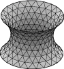
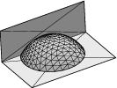
Construct a datafile for a drop of liquid that sits at the junction of a horizontal plane and a vertical wall, with contact angle 110 degrees on the wall and 60 degrees on the plane. Construct one datafile using full facets around the drop, and construct a second datafile using constraint integrals to replace the facets on the plane and wall. Use the first datafile to check the second; when you load them, they should have identical energy.